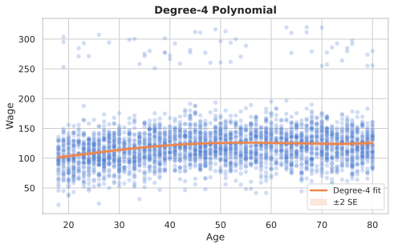
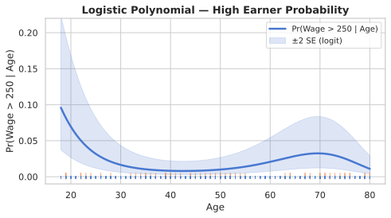
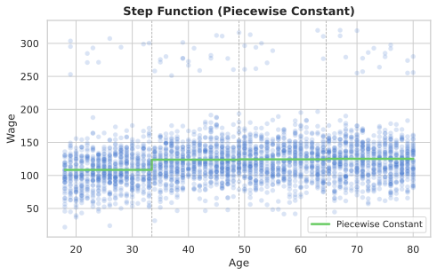
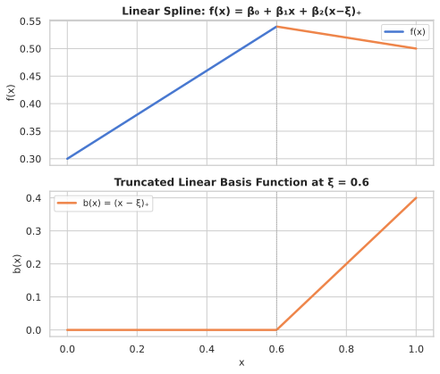
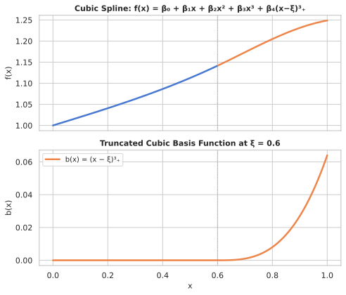
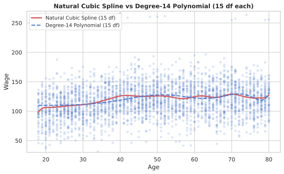
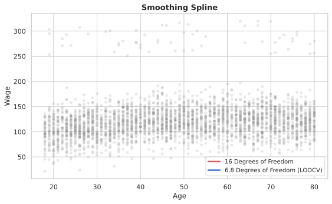
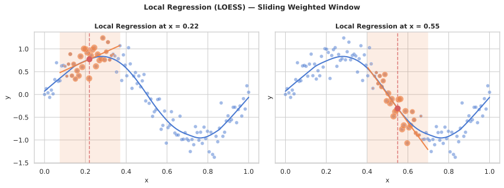
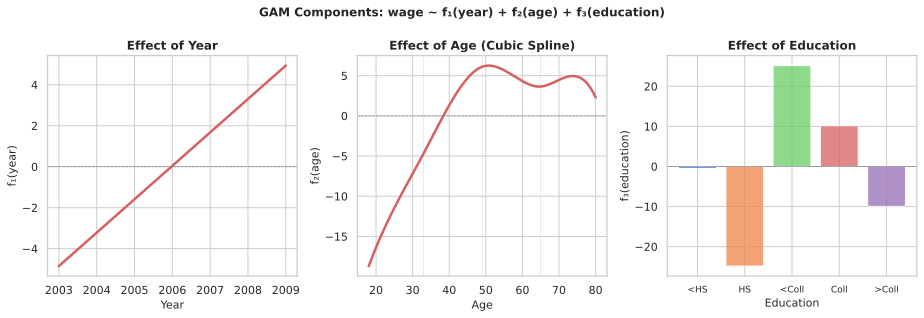
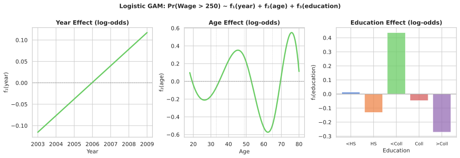

Where we are heading
Part 1 · 0:00–0:20
Polynomial RegressionDegree-d models, fitted curves, logistic extension, tail caveats.
Part 2 · 0:20–0:35
Step Functions & Piecewise PolynomialsPiecewise constant fits, dummy encoding, path from steps to splines.
Part 3 · 0:35–1:00
SplinesLinear, cubic, and natural cubic splines; knot placement, df trade-offs.
Part 4 · 1:00–1:20
Smoothing SplinesRoughness-penalised fit, effective df, LOOCV lambda selection.
Part 5 · 1:20–1:40
Local RegressionSliding weighted window, span parameter, loess().
Part 6 · 1:40–2:00
Generalized Additive ModelsAdditive structure, GAM components, GAM for classification.
Linear models are a starting point, not the end. These methods let you capture any smooth nonlinear relationship while staying interpretable.
Why go beyond linearity?
- Linear models are easy to fit and interpret — but the world is rarely linear.
- We want methods that are flexible yet still interpretable, unlike black-box models.
- Key insight: we can enrich the linear model by transforming the predictors, while keeping the same least-squares machinery.
- Five families: polynomials, step functions, splines, local regression, and GAMs — each a different way to bend the line.
The Polynomial Model
- Replace the single linear predictor X with X, X², X³, …, Xᵈ.
- yi = β₀ + β₁xi + β₂xi² + β₃xi³ + … + βₐxiᵈ + εi
- Treat Xk = xk as a new variable — then it's just multiple linear regression.
- Degree d is a hyperparameter: choose by CV or fix at a small value (d ≤ 5).
- Caveat: polynomials have notorious tail behaviour — they oscillate wildly outside the training range.

Fitted values and confidence bands
- We care about ŷ(x₀) = β̂₀ + β̂₁x₀ + β̂₂x₀² + β̂₃x₀³ + β̂₄x₀⁴ at any test point x₀.
- Since ŷ(x₀) is a linear function of β̂, we get a simple expression for its variance — use OLS standard error formula.
- Plot ŷ(x₀) ± 2·se[ŷ(x₀)] as a pointwise confidence band.
- In Python: fit with
PolynomialFeatures + LinearRegression, ornp.polyfit; CIs viastatsmodels.OLS. - In R:
y ~ poly(x, degree=3)— orthogonal polynomials are numerically more stable.
Logistic polynomial extension
- Polynomial features work seamlessly inside logistic regression.
- Example: Pr(wage > 250 | age) modelled as a logistic function of age1…age4.
- Compute CIs on the logit scale, then invert with σ(·) to get CI on the probability scale.
- The rug plot at the bottom shows the (rare) high-earner observations.

Polynomial regression — live
Fit degree-1 and degree-4 polynomials on simulated wage data. Plot both fits side by side.
Step Functions
- Divide X into K+1 contiguous regions via cut points c₁ < c₂ < … < cₖ.
- Create indicator (dummy) variables: C₁(X)=I(X
- Fit a constant within each region — effectively a histogram regression.
- Easy to implement:
pd.cut()→get_dummies()→LinearRegression.- Useful for creating interpretable interactions, e.g. I(year<2005)·Age allows a different slope before/after 2005.

From steps to piecewise polynomials
- Instead of a constant in each region, fit a separate polynomial.
- A piecewise cubic with K knots fits a degree-3 polynomial in each of the K+1 intervals — that's 4(K+1) parameters.
- Problem: the polynomials need not join smoothly — there can be jumps and kinks at the knots.
- Adding continuity constraints reduces the parameter count but keeps the fit smooth.
- Splines have the maximum useful continuity: for a degree-d spline, the function and its first d−1 derivatives are continuous at every knot. For cubic splines (d=3), this means the curve, its slope, and its curvature are all continuous — producing a visually smooth fit with 4(K+1) − 3K = K+4 free parameters after imposing 3K constraints across K knots.
Four levels of smoothness

Step function — live
Fit a piecewise-constant step function on simulated wage~age data using pd.cut() and LinearRegression.
Linear Splines — basis functions
- A linear spline with knots ξ₁,…,ξₖ is a piecewise linear function that is continuous at each knot.
- Represented as: y = β₀ + β₁x + β₂(x−ξ₁)₊ + … + βₖ₊₁(x−ξₖ)₊
- Truncated positive part: (x−ξ)₊ = max(x−ξ, 0)
- Each basis function is 0 to the left of its knot, then grows linearly — it 'turns on' at ξ.
- K knots → K+2 parameters (intercept + slope + K kink terms).

Cubic Splines — the workhorse
- A cubic spline with K knots has continuous first and second derivatives at every knot — the curve looks visually smooth.
- Truncated cubic basis: b₁=x, b₂=x², b₃=x³, bₖ₊₃=(x−ξₖ)³₊
- K knots → K+4 parameters (3 polynomial terms + K truncated cubics + intercept).
- Fitted with ordinary least squares — no special algorithm needed.
- In R:
bs(x, knots=c(25,40,60)); in Python: build the truncated basis manually or usepatsy.cr().

Natural Cubic Splines
- Cubic splines can behave badly in the tails (beyond the boundary knots) — high variance, wild extrapolation.
- A natural cubic spline adds the constraint that f(x) is linear beyond the boundary knots (zero second and third derivatives in the tails).
- This imposes 4 constraints (2 per boundary knot) → reduces df by 4 vs a regular cubic spline with the same knots, giving K df for K internal knots (vs K+4 for an unconstrained cubic spline).
- With the same df budget, we can place more internal knots → better fit in the interior.
- In Python:
scipy.interpolate.UnivariateSplinewith boundary conditions.
Knot placement and degrees of freedom
- Strategy: pick K (number of knots), then place them at uniform quantiles of X — this puts more knots where the data is dense.
- Cubic spline with K internal knots: K+4 df; Natural cubic spline with K internal knots: K df.
- More df = more flexibility = more variance. Choose K by cross-validation.
- At the same df, natural splines almost always beat polynomials in the tails.

Cubic & smoothing splines — live
Build a truncated power basis cubic spline and compare to scipy's UnivariateSpline on the same data.
The smoothing spline criterion
- Minimise over all smooth functions g: Σ(yᵢ − g(xᵢ))² + λ ∫ g″(t)² dt
- First term = RSS — fits the data.
- Second term = roughness penalty — penalises curvature (g″ large ≡ wiggly).
- λ ≥ 0 controls the trade-off: λ=0 → interpolating spline (zero training RSS), λ→∞ → linear fit.
- The solution is always a natural cubic spline with a knot at every unique xᵢ — but λ controls effective smoothness.
Effective degrees of freedom
- Fitted values: ĝλ = Sλ y, where Sλ is an n×n smoother matrix.
- Effective df: dfλ = Σᵢ {Sλ}ᵢᵢ — the trace of the smoother matrix.
- Convenient to specify df instead of λ — the algorithm finds the λ that gives the target df.
- LOOCV: RSSCV(λ) = Σ [(yᵢ − ĝλ(xᵢ)) / (1 − {Sλ}ᵢᵢ)]² — computed from a single fit!

Smoothing splines in Python
scipy.interpolate.UnivariateSpline(x, y, k=3, s=smoothing_factor)- The
sparameter controls smoothing: s=0 → interpolating, s large → very smooth. - Set s ≈ n × σ² as a rule of thumb; use CV to tune.
spl.get_residual()returns RSS;spl.get_knots()returns interior knots (note: true effective df requires the smoother matrix trace — not simply the knot count).- No need to choose knot locations — the algorithm places them automatically at the data points.
Smoothing spline — live
Fit smoothing splines with different s values (λ proxy). See how the smoothing parameter controls wiggliness.
The local regression idea
- At each query point x₀, fit a weighted linear regression using only nearby observations.
- Algorithm: (1) find s·n nearest neighbours of x₀; (2) assign weights Kλ(x₀, xᵢ) — highest at x₀, zero beyond the window; (3) fit weighted OLS; (4) use ŷ = β̂₀ + β̂₁x₀.
- The span s controls smoothness: small s → wiggly, large s → smooth (like a global fit).
- In Python:
statsmodels.nonparametric.smoothers_lowess.lowess(y, x, frac=0.5). - In R:
loess(wage ~ age, span=0.5).

Weight functions and span choice
- Epanechnikov kernel: K(u) = 0.75(1−u²) for |u|≤1 — optimal in MSE sense.
- Tricube kernel: w = (1 − |d/dₘₐₓ|³)³ — the most common default in loess.
- Can fit higher-degree local polynomials (not just linear) inside each window.
- Span = proportion of data used per fit: span 0.2 = 20% of points per window.
- Choose span by cross-validation; LOOCV is cheap for fixed span.
- Caveat: boundary effects — fewer points available at the edges of X.
LOESS — live
Fit local regression with three different span values using statsmodels.lowess. Compare smoothness.
The GAM idea
- Replace each linear term βjxij with a smooth function fj(xij):
- yi = β₀ + f₁(xi1) + f₂(xi2) + … + fp(xip) + εi
- Each fj can be a spline, polynomial, step function, or LOESS fit — independently chosen.
- Additive structure is the key: effects are summed, so each component is interpretable in isolation.
- Fit by backfitting: iteratively update each fj while keeping the others fixed, until convergence.
GAM components — wage example

GAMs for classification
- GAMs extend naturally to logistic regression:
- log[p(X) / (1−p(X))] = β₀ + f₁(X₁) + f₂(X₂) + … + fp(Xp)
- Each component is now a contribution to the log-odds.
- In Python: build spline features, then pass to
LogisticRegression— same trick as before.

Pros, cons, and extensions
Advantages
- Automatically models nonlinear effects — no manual feature engineering.
- Each fj is interpretable via a component plot.
- Can mix: some terms linear, some spline, some factor.
- Use
anova()to test linearity of each term.
Limitations
- Additive assumption can miss interaction effects.
- Can add low-order interactions:
ns(age,df=5):ns(year,df=5). - Backfitting may be slow for large n and many predictors.
- In Python:
pygamlibrary provides a full GAM implementation with automatic smoothing.
GAM — live
Build an additive model for wage using spline on age, linear year, and dummy education. Print R² and plot the age component.